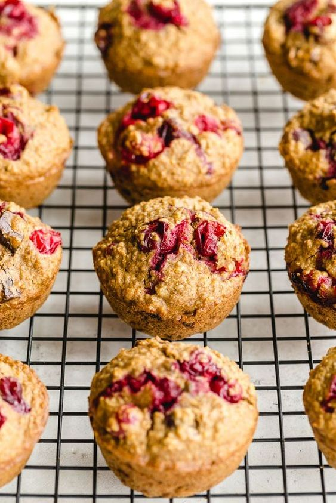

Cranberry Pumpkin Muffins

Description
TThese pumpkin cranberry muffins make a perfect addition to your Thanksgiving table, but don't stop there. Think grab-and-go breakfasts, afternoon snack with tea, even bake sale! Made with pumpkin puree, dried cranberries, and a quartet of warm fall spices, these simple muffins are ready to enjoy in less than 45 minutes.
Ingredients
- 2 cups all-purpose flour
- ¾ cup brown sugar, packed
- 2 teaspoons baking powder
- 1 teaspoon ground cinnamon
- ½ teaspoon salt
- ¼ teaspoon baking soda
- ¼ teaspoon ground ginger
- ⅛ teaspoon ground cloves
- ⅛ teaspoon ground nutmeg
- 1 cup canned unsweetened pumpkin puree
- ½ cup unsalted butter, melted and cooled slightly
- ¼ cup buttermilk
- 2 eggs, lightly beaten
- 2 teaspoons vanilla extract
- 1 cup dried, sweetened cranberries
Steps
- Preheat the oven to 400 degrees F (200 degrees C). Line a 12-cup muffin tin with paper liners.
- Mix flour, brown sugar, baking powder, cinnamon, salt, baking soda, ginger, cloves, and nutmeg together in a mixing bowl.
- Beat pumpkin puree, melted butter, buttermilk, and vanilla in another large mixing bowl until well combined. Gradually beat in flour mixture, then stir in dried cranberries until incorporated. Fill the prepared muffin cups about 3/4 full with batter.
- Bake in the preheated oven until a toothpick inserted in the middle of a muffin comes out clean, 20 to 25 minutes. Remove from the oven and let rest for a few minutes before turning muffins out onto a wire rack. Serve warm or at room temperature.